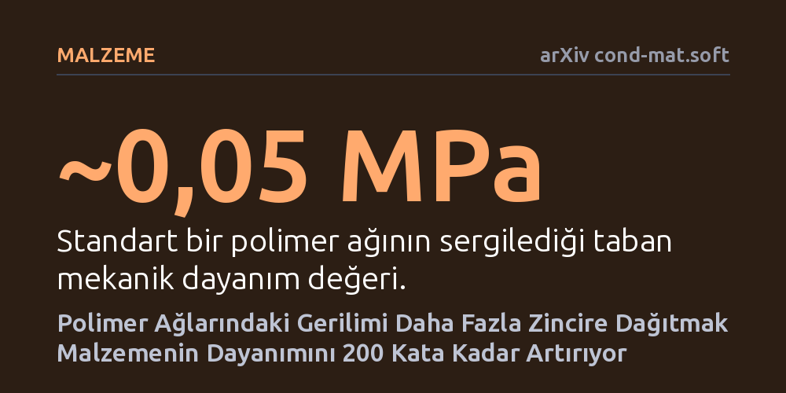

MALZEME · arXiv cond-mat.soft · 2026-10-10
Araştırmacılar, polimer ağlarının tekil polimer zincirlerine kıyasla neden çok daha zayıf olduğunu inceleyerek mekanik gerilimi ağa yaymanın yollarını araştırdı. Gerilimin az sayıda zincir yerine geniş bir ağa dağıtılmasıyla, esnekliği bozulmadan hidrojellerin dayanımı 0,05'ten 10 megapaskala kadar yükseltildi.
Yumuşak ve esnek malzemelerin kaçınılmaz olarak zayıf ve kırılgan olduğu kabulünü yıkarak, kauçuk ve jel benzeri yapıların esnekliğini korurken metallere yaklaşan bir mekanik direnç kazanabileceğini gösteriyor.

Günlük hayatımızda kullandığımız temas lenslerinden yapay kıkırdaklara, araba lastiklerinden biyomedikal sensörlere kadar pek çok esnek ürün polimerlerden üretilir. Ancak bu malzemelerin köklü bir zayıflığı vardır: Tek bir polimer molekülü zinciri kendi başına son derece yüksek bir çekme kuvvetine dayanabilirken, milyonlarca zincirin bir araya gelmesiyle oluşan ağ yapısı beklenmedik derecede kırılgan davranır. Malzeme bütünü, onu oluşturan tekil yapı taşlarının taşıyabileceği teorik kuvvetin fersah fersah altında bir gerilimde kopar.
Bu durumun temel sebebi, mekanik gerilimin malzeme içinde adaletsiz dağılmasıdır. Esnek bir malzemeyi çektiğinizde, yük tüm zincirler arasında eşit paylaşılmaz; ağın geometrik düzensizliği yüzünden gerilimin neredeyse tamamı az sayıdaki kısa veya talihsiz zincire yığılır. Bu öncü zincirler koptuğunda oluşan mikro yırtıklar hızla büyüyerek malzemenin aniden parçalanmasına yol açar. Bilim insanları uzun zamandır şu can alıcı sorunun cevabını arıyordu: Malzemenin elastik yapısını ve yaylanma kabiliyetini bozmadan, yükü sadece birkaç zincirin omzundan alıp tüm ağa yaymak mümkün mü?
Araştırmacılar, gerilim yoğunlaşmasını dağıtmak amacıyla polimer ağlarının iç mimarisini kökten değiştiren yenilikçi sentez yaklaşımları geliştirdi. Ekip, hidrojel ve elastomer sistemleri üzerinde çalışarak tek tip ve seyrek ağlar yerine, zincirlerin birbiri etrafında yoğun şekilde dolandığı ve birbirini desteklediği yapılar kurguladı.
Araştırmada uygulanan temel stratejilerden ilki, polimer zincirlerini fiziksel olarak birbirine dolayarak yoğun düğümlü bir doku oluşturmaktı. İkinci ve daha ileri adımda ise, önceden gerilmiş iki farklı polimer ağının birbiri içerisine geçirilmesiyle kompozit bir mimari elde edildi. Böylece malzeme çekildiğinde ilk darbeyi tek bir bağ kümesi karşılamak zorunda kalmadı; gerilim ağ boyunca yayılarak çok daha fazla zincirin aynı anda yük taşıması sağlandı. Deneyler boyunca numunelerin hem mekanik kopma dayanımları hem de şekil değiştirirken ne kadar enerji kaybettikleri hassas çekme testleriyle kaydedildi.
Deney sonuçları, gerilimi dağıtma yaklaşımının hidrojel dayanımında eşine az rastlanır bir artış yarattığını ortaya koydu. Standart bir polimer ağının kopma dayanımı yaklaşık 0,05 megapaskal gibi oldukça mütevazı bir seviyedeyken, yoğun düğümlü ağ tasarımıyla bu değer yaklaşık 1 megapaskala ulaştı. Önceden gerilmiş ve iç içe geçirilmiş polimer ağında ise dayanım yaklaşık 10 megapaskal seviyesine fırladı. Bu, malzemenin temel haline kıyasla yaklaşık 200 kat daha güçlü hale gelmesi anlamına geliyordu.
Daha da önemlisi, bu olağanüstü dayanım artışı elde edilirken malzemenin esneklik özelliği feda edilmedi. Geleneksel olarak polimerleri güçlendirmek için içine sert dolgu maddeleri eklemek veya yoğun kimyasal bağlar kurmak, malzemenin yaylanmasını engeller ve gerilip bırakıldığında geride yüksek bir enerji kaybı (histerezis) bırakır. Araştırmacıların geliştirdiği yöntem ise düşük histerezisi korumayı başardı; yani malzeme defalarca gerilse bile ilk formuna hızla ve yorulmadan geri dönebildi. Üstelik ekip, benzer mekanik dayanım sıçramasının hidrojellerin yanı sıra elastomerlerde de geçerli olduğunu gösterdi ve zincir uzunluğu ile nihai dayanım arasında matematiksel bir ölçeklenme kuralı tespit etti.
Bu bulgular, malzeme biliminde yıllardır süregelen 'ya esnek olursun ya da dayanıklı' ikilemini aşmak için net bir tasarım ilkesi sunuyor. Yumuşak robotik sistemlerden yapay kıkırdak ve tendonlara, giyilebilir elektroniklerden uzun ömürlü contalara kadar pek çok alanda hem su tutabilen veya esneyebilen hem de yüksek mekanik yüklere yırtılmadan direnebilen malzemelere acil ihtiyaç duyuluyor. Gerilimi dağıtma ilkesi, bu tür yapıların kırılganlığını ortadan kaldırma potansiyeline sahip.
Yine de çalışmanın henüz bir önbaskı aşamasında olduğunu ve bağımsız hakem değerlendirmesinden geçmediğini unutmamak gerekiyor. Laboratuvar ortamında elde edilen bu başarılı sonuçların endüstriyel ölçekte üretilip üretilemeyeceği, malzemenin yıllar süren tekrarlı yükler altında nasıl yıpranacağı ve kimyasal kararlılığını nasıl koruyacağı ilerleyen bağımsız araştırmalarla sınanacak. Ancak gerilimi tekil zincirlerden geniş bir ağa yayma fikri, yumuşak malzemelerin geleceği için şimdiden sağlam bir teorik ve pratik zemin oluşturuyor.